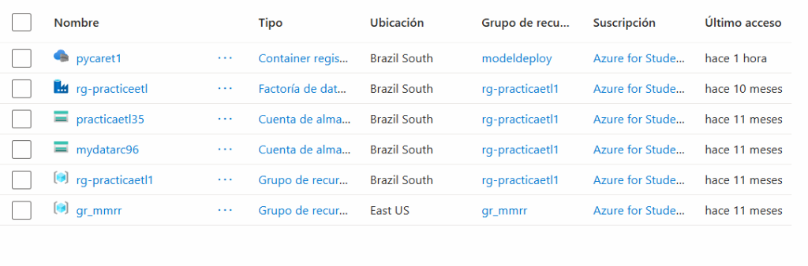
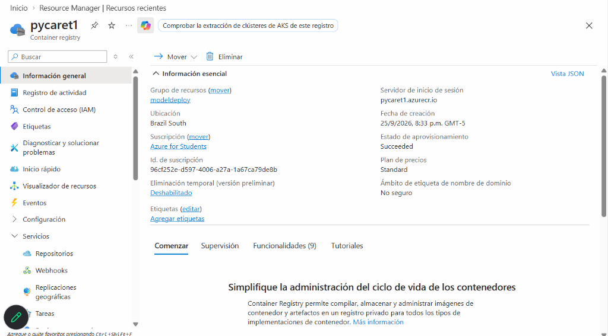
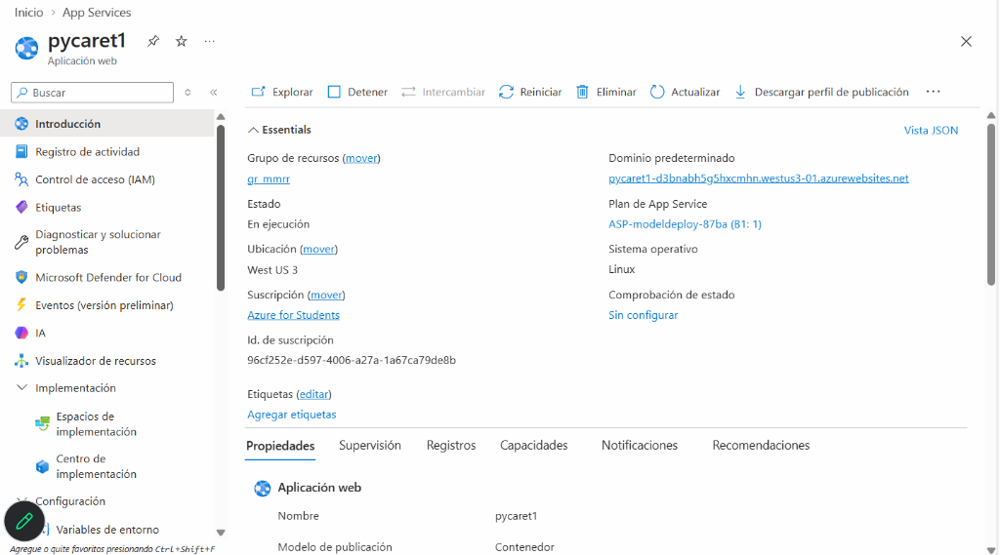
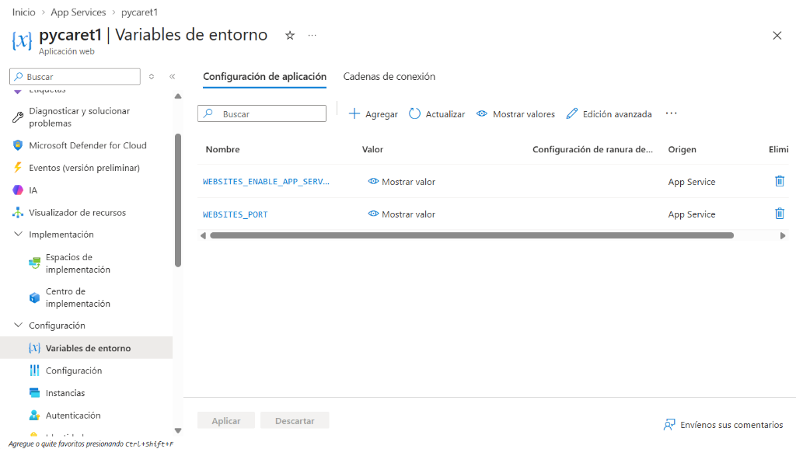

Paso a paso para clonar un proyecto, contenerizar con Docker, desplegar en Azure Container Registry & Web App, y automatizar cambios con CI/CD.
El proyecto base proviene del repositorio del curso (avila196/sample-pycaret). Para trabajar sobre tu propia cuenta sin requerir permisos en el repositorio original, se realiza una migración limpia de origen remoto.
# Clonar el proyecto base en tu máquina
git clone https://github.com/avila196/sample-pycaret.git
cd sample-pycarethttps://github.com/new.sample-pycaret.# Cambiar el origen remoto al de tu cuenta personal
git remote set-url origin https://github.com/rafaelchamorro/sample-pycaret.git
# Verificar que los enlaces apunten a tu usuario
git remote -v
# origin https://github.com/rafaelchamorro/sample-pycaret.git (fetch)
# origin https://github.com/rafaelchamorro/sample-pycaret.git (push)En MLOps, empaquetar el código junto con el archivo de modelo serializado (deployment_20260516.pkl) garantiza que el servicio responda de forma idéntica en local y en la nube.
Se modificó el archivo Dockerfile para asegurar compatibilidad con Azure Web App:
FROM python:3.11
# Configuración del entorno virtual aislado
RUN pip install virtualenv
ENV VIRTUAL_ENV=/venv
RUN virtualenv /venv -p python3
ENV PATH="$VIRTUAL_ENV/bin:$PATH"
# Puerto dinámico de producción
ENV PORT=5000
WORKDIR /app
ADD . /app
# Instalación de librerías del modelo (PyCaret, Flask, pandas)
RUN pip install -r requirements.txt
EXPOSE 5000
# Comando de arranque del servidor web
CMD ["python", "app.py"]Azure inyecta dinámicamente la variable de entorno PORT. En app.py se garantiza la lectura de esta variable:
if __name__ == '__main__':
import os
port = int(os.environ.get("PORT", 5000))
debug_mode = os.environ.get("FLASK_DEBUG", "false").lower() == "true"
app.run(host='0.0.0.0', port=port, debug=debug_mode)Antes de gastar tiempo y dinero en construir imágenes en la nube, se ejecutan pruebas automáticas en tests/test_model.py:
from pycaret.regression import load_model, predict_model
import pandas as pd
def test_model_loading_and_inference():
# 1. Carga el artefacto serializado
model = load_model('deployment_20260516')
assert model is not None
# 2. Inferencia con datos de prueba
sample_data = pd.DataFrame([{
'age': 35, 'sex': 'male', 'bmi': 26.5,
'children': 2, 'smoker': 'no', 'region': 'northeast'
}])
pred = predict_model(model, data=sample_data)
assert 'prediction_label' in pred.columns
assert float(pred.loc[0, 'prediction_label']) > 0Con tu suscripción de Azure for Students, se crearon los siguientes componentes sin costo real:
| Recurso de Azure | Nombre | Región | Plan / Nivel | Propósito |
|---|---|---|---|---|
| Resource Group | modeldeploy |
Brazil South | - | Agrupa el registro de imágenes. |
| Container Registry (ACR) | pycaret1 |
Brazil South | Standard (o Basic) | Almacena de forma privada las imágenes Docker (pycaret1.azurecr.io). |
| Web App (App Service) | pycaret1 |
West US 3 | B1 Linux Container | Ejecuta el contenedor en producción en la nube. |


Para que GitHub Actions pueda hacer docker login en tu registro, debes habilitar el usuario admin:
az acr update -n pycaret1 --admin-enabled true
WEBSITES_PORT = 5000):WEBSITES_PORT = 5000. Esto indica a Azure que envíe el tráfico al puerto donde escucha Flask.
az resource update --resource-group gr_mmrr --namespace Microsoft.Web --resource-type basicPublishingCredentialsPolicies --parent sites/pycaret1 --name scm --set properties.allow=true
En tu repositorio en GitHub (Settings > Secrets and variables > Actions), se registran los 5 secretos:
| Secreto de GitHub | Valor Configurado | Origen |
|---|---|---|
ACR_LOGIN_SERVER |
pycaret1.azurecr.io |
ACR > Información General |
ACR_USERNAME |
pycaret1 |
ACR > Claves de acceso |
ACR_PASSWORD |
[Contraseña de Administrador] | ACR > Claves de acceso |
AZURE_WEBAPP_NAME |
pycaret1 |
Nombre de la Web App |
AZURE_WEBAPP_PUBLISH_PROFILE |
[Contenido XML completo] | Web App > Botón "Descargar perfil de publicación" |
name: MLOps CI/CD - PyCaret Azure Pipeline
on:
push:
branches: [ main ]
workflow_dispatch:
env:
PYTHON_VERSION: "3.11"
IMAGE_NAME: "insurance-app"
jobs:
# 1. QUALITY GATE
test-and-validate:
runs-on: ubuntu-latest
steps:
- uses: actions/checkout@v4
- uses: actions/setup-python@v5
with:
python-version: ${{ env.PYTHON_VERSION }}
cache: "pip"
- run: |
pip install -r requirements.txt
pip install -r requirements-test.txt
- name: Validar Modelo y Endpoints
env:
PYTHONPATH: .
run: python -m pytest tests/ -v
# 2. DOCKER BUILD & PUSH A ACR
build-and-push:
needs: test-and-validate
runs-on: ubuntu-latest
steps:
- uses: actions/checkout@v4
# ============================================================
# RETO: CAMBIO AUTOMÁTICO DEL TÍTULO A ESPAÑOL POR WORKFLOW
# ============================================================
- name: Asegurar título de la página en Español
run: |
sed -i 's/Predict Health Insurance Bill - V2/Predicción del Costo del Seguro Médico/g' templates/home.html
- uses: docker/setup-buildx-action@v3
- uses: docker/login-action@v3
with:
registry: ${{ secrets.ACR_LOGIN_SERVER }}
username: ${{ secrets.ACR_USERNAME }}
password: ${{ secrets.ACR_PASSWORD }}
- name: Construir y Publicar Imagen en Azure ACR
uses: docker/build-push-action@v5
with:
context: .
push: true
tags: |
${{ secrets.ACR_LOGIN_SERVER }}/${{ env.IMAGE_NAME }}:${{ github.sha }}
${{ secrets.ACR_LOGIN_SERVER }}/${{ env.IMAGE_NAME }}:latest
cache-from: type=gha
cache-to: type=gha,mode=max
# 3. DESPLIEGUE CONTINUO EN AZURE WEB APP
deploy-to-azure:
needs: build-and-push
runs-on: ubuntu-latest
steps:
- uses: azure/webapps-deploy@v3
with:
app-name: ${{ secrets.AZURE_WEBAPP_NAME }}
publish-profile: ${{ secrets.AZURE_WEBAPP_PUBLISH_PROFILE }}
images: "${{ secrets.ACR_LOGIN_SERVER }}/${{ env.IMAGE_NAME }}:${{ github.sha }}"
- name: Smoke Test Post-Despliegue
run: |
sleep 25
curl -f -s https://${{ secrets.AZURE_WEBAPP_NAME }}.azurewebsites.net/health || echo "OK"Una vez ejecutado el workflow tras un git push origin main:
curl -X POST https://pycaret1-d3bnabh5g5hxcmhn.westus3-01.azurewebsites.net/predict_api \
-H "Content-Type: application/json" \
-d '{"age": 35, "sex": "male", "bmi": 26.5, "children": 2, "smoker": "no", "region": "northeast"}'
# Respuesta: {"output": 4350}az acr update -n pycaret1 --sku Basic.